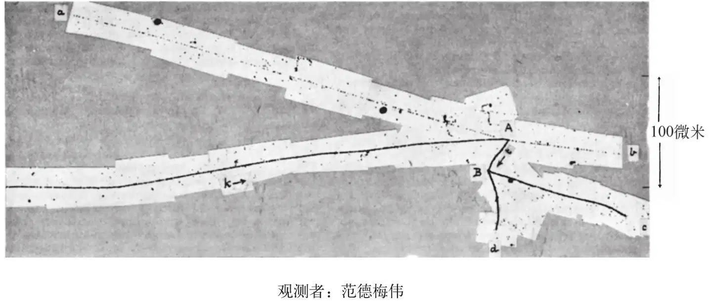
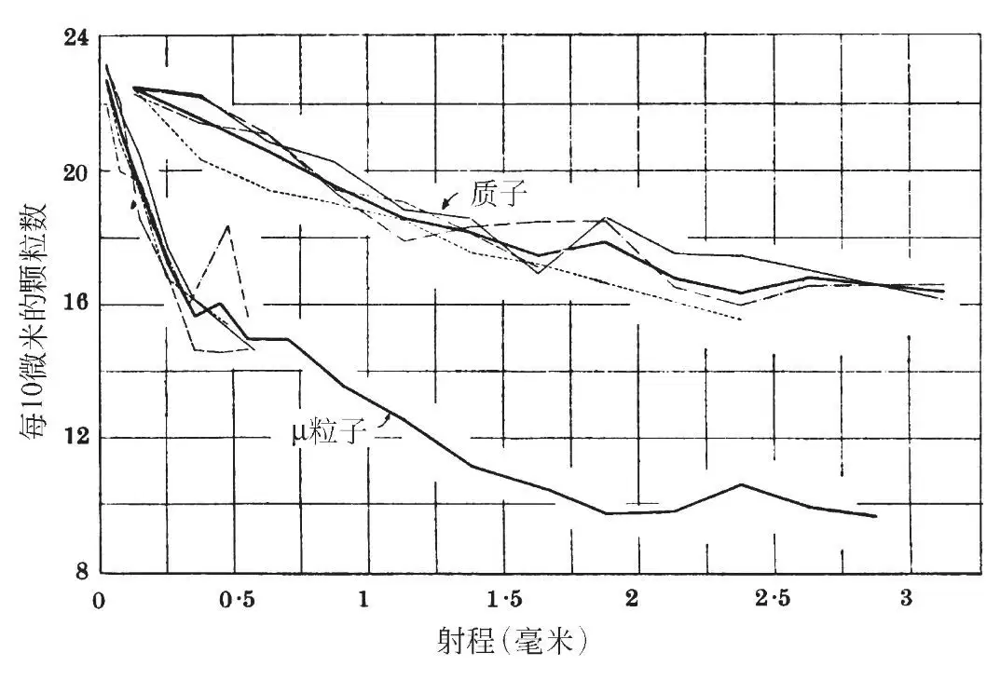
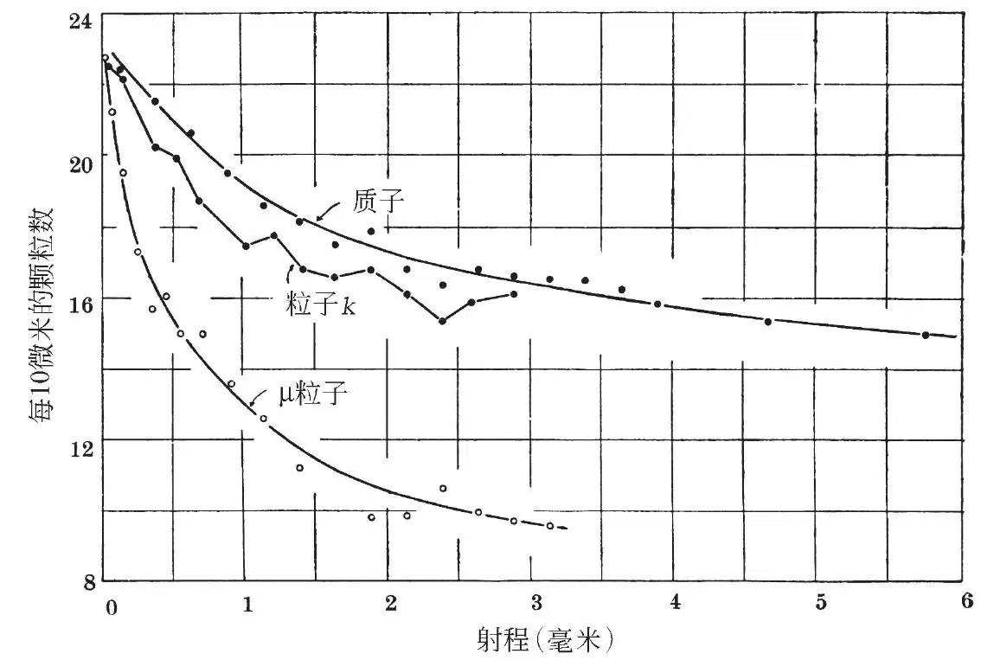
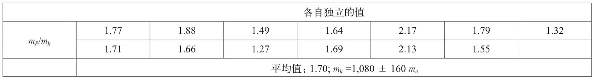
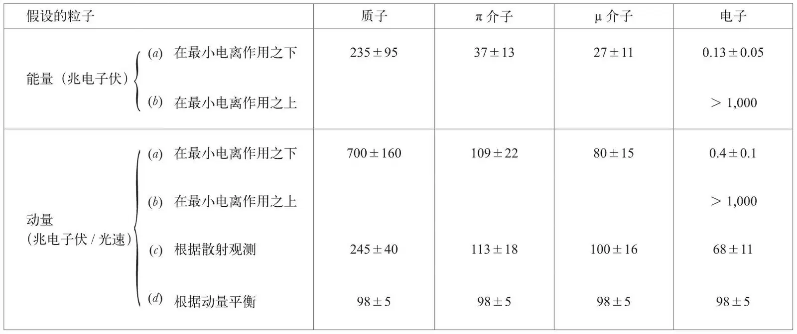
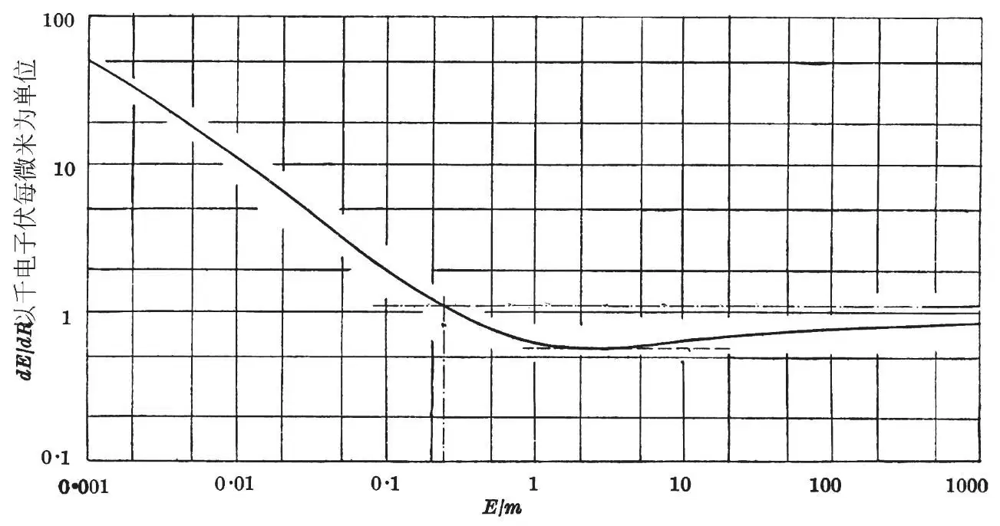
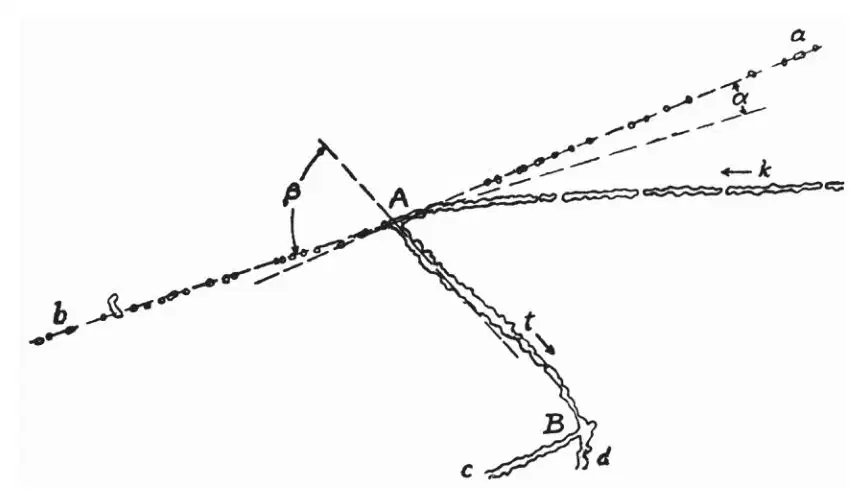
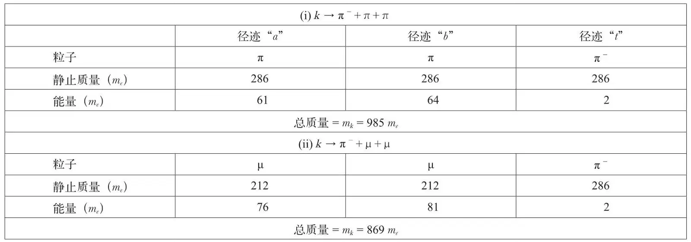
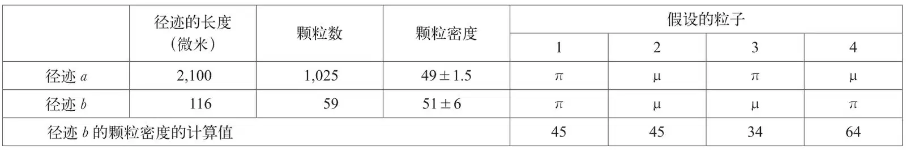

英文
英文布朗等
编者按
最近新发现了一种大约具有1,000倍电子质量的粒子，受到其实验证据的启发，物理学家塞西尔·鲍威尔和同事们在本文中报道了高海拔云室宇宙射线实验：来自太空的高能粒子。他们分析了一个具有单位电荷的“k粒子”（后来称为K介子）的径迹，这个粒子进入云室后衰变为另外两个粒子。通过计算照相颗粒他们估算了这个k粒子的质量，结果发现其质量大约是电子质量的1,080倍。他们把这种衰变解释为一个产生两个π介子的过程。这些结果促使人们在之后十年内有了新的发现，即包含弱核力相互作用并不遵守镜面对称。 英文
在检查少女峰上曝光的电子敏感底片时，我们最初的重要发现之一就是如图8中显微照片的拼嵌图所表示的记录。图中存在两个中心A和B，带电粒子的径迹从这两点开始分裂，并且以常见的径迹t相连接。由于曝光的时间很短，并且仅有少量的蜕变反映在底片上，因此观测结果中对应于无关事件径迹偶然交叉重叠的可能性是非常小的，仅为1×10–7量级，因此我们可以将这种重要的可能性合理地排除。后面我们将会给出进一步支持上述假设的观测结果。 英文

图8 英文
对径迹k的检验表明，产生它的粒子到达蜕变中心A的附近。该粒子在乳胶中的射程超过3,000微米，在接近A的过程中，径迹的颗粒密度逐渐增加。在A附近，其颗粒密度与同在该底片上记录的电荷为e的粒子接近射程终端处的颗粒密度无法区分。 英文
观测发现库仑散射造成了径迹的小角度偏离，这支持了基于颗粒计数得到的关于粒子运动方向的证据。这些偏离在靠近A时出现得最为频繁，而散射在远离A的各点处比较不明显。 英文
根据这些观测我们有理由认为，粒子k向A点靠近；它携带着基本电子电荷，并在A点附近达到或接近其射程的终端。因此我们假设，粒子k引发了一连串由A和B的辐射径迹所代表的事件。由此可知，该粒子产生了源自A点并在B点产生蜕变的径迹t。为了分析该事件，我们首先尝试了对粒子k的质量进行确定。 英文
根据颗粒计数所做的质量测定
约在一年前，本实验室采用颗粒计数的方法[5]以及研究粒子通过乳胶时小角度散射的方法[4]，进行了测定π介子和µ介子（编者注：现在粒子物理认为“µ介子”不是介子，而是一种轻子，因此正确的称谓应为“µ子”。考虑到历史原因，文中仍保留“µ介子”的译法。）的质量比mπ/mμ的实验。用这两类方法得到的结果分别为mπ/mμ=1.65±0.11和mπ/mμ=1.35±0.10*。最近在伯克利进行的实验[6]表明，其真值为1.33±0.02，这个结果使人们对颗粒计数方法的可靠性产生了严重的怀疑。但是考虑到该方法的优点，以及据此得到的一些重要结论，我们进行了一些实验来确定在何种条件下才能获得可靠的结果。 英文
在首次实验中[5]，两个最为严重的实验难点来自潜影的褪色和显像度随深度的变化。若要对同一对π介子和µ介子径迹的颗粒数密度进行对比，就必须研究同时形成的径迹。然而这样一来，可以用于测量的π介子的径迹大多小于400微米。在后续的实验中，通过运用短期曝光的方法获得了更多良好条件，这使得褪色效应可以被忽略；与此同时，还采用了迪尔沃思、奥恰利尼和佩恩[7]所使用的冲洗底片的方法，这种方法获得了与深度几乎一致的显像度。 英文
用上述方法得到的底片来比较不相关粒子径迹的颗粒密度是合理的。此外，现在知道，产生“星”点的介子中至少多数甚至可能全部是π－粒子[6,8]；而大多数 介子是µ+粒子和µ－粒子。因此在测定mπ和mμ的实验中，我们对长度大于1,000微米的π+和π－、µ+和µ－粒子的径迹进行了测量，并将其与用类似方法对质子径迹的测量结果做了比较。在上述条件下，我们得出mπ/mμ=1.33±0.05。观测的详细计算将另行发表；考虑到本文的目的，这里只需指出该结果与用其他方法获得的结果非常一致就足够了。由此我们认为，在新的条件下，用伊尔福C2乳胶能够获得可靠的信息。 英文
介子是µ+粒子和µ－粒子。因此在测定mπ和mμ的实验中，我们对长度大于1,000微米的π+和π－、µ+和µ－粒子的径迹进行了测量，并将其与用类似方法对质子径迹的测量结果做了比较。在上述条件下，我们得出mπ/mμ=1.33±0.05。观测的详细计算将另行发表；考虑到本文的目的，这里只需指出该结果与用其他方法获得的结果非常一致就足够了。由此我们认为，在新的条件下，用伊尔福C2乳胶能够获得可靠的信息。 英文
我们已经知道，目前实验中所用的新柯达乳胶已可以同时满足均匀显像和不变色的条件，因此我们试图用类似方法并使用伊尔福胶片对粒子的质量进行测量。图9显示了在同一胶片中四个质子和四个µ粒子的径迹的观测结果。在图中，用径迹中单位长度的颗粒数对不同残余射程值作图；同一类型径迹的平均值用粗线表示。两类粒子的质量比可通过比较颗粒密度相同时所对应的残余射程值导出。由此得到的结果为mμ = 220 ± 20 me。 英文

图9 英文
用类似的方法，我们已估算了粒子k的质量值，测量结果如图10所示。这个图给出了四个µ介子和四个质子的径迹中的颗粒密度的平均值，同时也给出了粒子k的颗粒密度。上述所有径迹均在同一张底片中获得。 英文

图10 英文
将粒子k径迹中的颗粒密度与质子平均曲线进行对比，表1给出了比较结果以及由此测定的k粒子的质量值。这些值都是独立的，平均值是mk =1,080 ±160 me。 英文
表1. 利用颗粒计数测得的质子质量与粒子k质量的比值mP/mk

上述给出的误差极限由下述方式导出：我们已对四个单独质子的径迹中的颗粒密度与它们的径迹颗粒密度的平均曲线（见图9）进行了比较，并由此得到了每个粒子表观质量的若干独立值。根据这些值的分布，我们可以计算出在依据每个单独径迹测定质量的过程中所产生的“或然误差”，并将其表示为粒子表观质量的百分比。然后我们假设计算出的粒子k的质量具有相同的“或然”百分比误差。 英文
我们也用最近介绍的方法[4]，即通过研究粒子的小角度散射确定了质量mk，由此得到的结果是mk=1,800±400 me。如果粒子质量的真值是1,080 me，通过散射观测得到的值等于或大于1,800 me的概率是1/4。由于散射实验的观测有较大的统计涨落，因此我们给颗粒计数的测量以更大的权重。根据这些观测，似乎可以肯定，mk的真值位于700 me和1,800 me之间，我们认为它极可能远小于质子的质量。因此，在某一特定的残余射程值处，径迹k中每一个表示颗粒密度的点，都位于四个质子中相应的点之下。 英文
“B”蜕变
由点B发射的两个粒子的径迹c和d具有质子或较重粒子的特性，我们认为这源自于粒子t产生的蜕变。该粒子在通过乳胶时频繁地散射，因此速度很低；这个现象与其在B点达到射程终点的假设是一致的。 英文
目前已知能够产生具有星点B特征的蜕变的慢带电粒子只有π－粒子[6,8]。因此我们假定，在点A产生了质量为286 me的负介子，在达到其射程终点时产生B蜕变。 英文
“A”嬗变
为了解释A嬗变，我们首先对发射粒子的径迹做了详细的检查。在径迹a和b中，前者的径迹在乳胶中的长度大于2,000微米，并在表面终止，而径迹b的长度是116微米且在玻璃中终止。两个径迹的颗粒密度在统计涨落所确定的极限之内相等。在长径迹a中，平均颗粒密度是每100微米49.0个颗粒，该密度是电荷为e的粒子最小电离特征值的2.17倍。除非我们允许存在电荷的分数值，否则我们必然会得出，产生径迹a和b的粒子的带电量均为e的量级。 英文
为了测定产生径迹a和b的粒子能量的可能值，我们假定乳胶的原子组分与伊尔福C2胶片相同，根据哈尔彭和霍尔的公式[9]计算了电荷为e的粒子的比电离值随能量的变化。这个公式是布洛赫公式[10]的修正形式；该公式适用于在固体介质中运动的粒子，并给出了与低能粒子的实验非常符合的结果。结果示于图11中，将比电离值作为量E/m的函数绘图，E和m分别为粒子的能量和质量，两个量均以兆电子伏为单位测量。根据图11，假定粒子是质子、π介子、µ介子或电子，我们确定了对应于径迹中观测到的颗粒密度的粒子a、b能量的可能值。所得到的结果列于表2中。 英文
表2. 基于有关粒子质量的各类假设，根据观测颗粒密度和散射导出的产生径迹a的粒子的能量和动量值


图11．电荷为|e|的粒子能量损失的速率随E/m变化的函数。其中E是动能，m是粒子质量，两个量的测量单位都是兆电子伏。 英文
粒子k在A点产生嬗变有两种可能的解释。我们可以假定，粒子或被核俘获，或产生自发衰变。从粒子质量的测量值来看，根据质量和能量守恒的观点，可能的情况是它在乳胶中射程的终点处被核俘获，并导致两个高能质子和一个π－粒子的发射。然而几乎同样确定的是，如此大量的能量在核中释放将导致很多核子的“蒸发”，这个过程在对宇宙辐射曝光的底片中很常见；还可以基本确定的是两个高能质子将是“多股”星仅有的两个组分。（可以注意到，我们不可以假定粒子k是被存在于凝胶体中的某个稀有的重氢核所俘获。在这种相互作用中，两个初始粒子电荷的代数和是0或2e，而产生的粒子的电荷代数和是e或3e。）对于径迹a和b是由质子或带电荷e的较重核产生的这一假说，稍后我们将介绍其他一些反对意见。 英文
根据上述考虑，如果我们要用已确定存在的粒子来描述嬗变，那么我们必须将径迹a和b认为是由电子、µ介子或π介子这三者之一所产生的。如果是电子，则我们必须假设电子的能量大于相应的最小电离能，即大于1,000兆电子伏；对应于观测到的较低的电离入射能量300千电子伏，粒子在乳胶中仅有约100微米的射程，并且会被频繁地散射。因此认为粒子a和b是电子的假设与能量守恒不相符，可以被排除。我们只能在剩下的π介子或µ介子中择一作为产生径迹的粒子。 英文
如果粒子a和b是介子，那么为了使质能守恒，我们必须假定在µ介子或π介子的情况下（见图11），其动能分别为27兆电子伏和37兆电子伏。如果假设粒子的发射是由于核内释放了相应于粒子k静止质量的能量，那么无论是上述哪种介子，观测结果都很难与该假设相一致。因此，我们只能尝试用这个粒子的自发衰变来对观测结果进行解释了。 英文
k粒子自发衰变的假定
在确定A嬗变是否对应于粒子k的自发衰变时，我们需要知道三个射出粒子的相对运动方向。为此必须确定乳胶的收缩，即在曝光时乳胶的厚度与经过显影、定影和烘干后的乳胶的厚度比值S。我们已经通过检验在不可控制的放射性沾染下乳胶中产生的α粒子的径迹测量了这个量。在这类“星”中，可以确定其中一些情况是由放射性钍的天然原子产生的，一个钍C′发射一个α粒子。通过测定乳胶表面上相应径迹投影的长度以及其“下陷”的表观角度，已测得了乳胶的收缩。由此获得的“收缩”值为S = 2.7±0.1。知道了S的值，那么通过观测粒子“下陷”的表观角度以及由乳胶表面确定的平面投影方向，便可以测定乳胶被处理前其中的径迹的原始取向，在较好的情况下，精度可达1°量级。采用这些方法，获得的三个粒子a、b、t运动的原始方向是共面的。任何一个粒子的运动方向与另两个粒子所确定的平面之间的偏离小于4°。在这项测定中的误差主要来源于径迹t是短程的，产生它的粒子是低速的并被频繁地散射。 英文
共面的粒子运动方向之间的角度值示于图12中。根据观测到的共面性可以合理地得出以下假设：三个粒子来自粒子k在乳胶的射程终端的自发衰变，并且它们是蜕变仅有的产物，整个过程没有中性粒子发射（中性粒子无法观测）。由此，必然会得出三个粒子动量的矢量和等于零的结论。 英文

图12．用投影显微镜作的图8中示出的事件的复制图。在三个径迹a、b、t的共面中测得的实际角α和β分别是：∠α = 9.8°，∠β= 76.6°。 英文
如果我们将径迹t归因于π－粒子是正确的，则根据观测到45微米的射程可得，发射的动能是1.04兆电子伏。该粒子相应的动量值是17.5兆电子伏/光速。根据观测到的运动方向，可得产生径迹a和b的粒子的动量分别为98±5兆电子伏/光速和104±5兆电子伏/光速。这些值将与表2中列出的根据观测的径迹中颗粒密度而导出的相应的电子或介子的数值相比较。我们已看到表2中列出的两个粒子的动量值，如果假定它们是电子，则这些值显然已大出很多倍。因此如果假定径迹a和b是由电子或质子产生的，则与动量平衡存在很大的偏差。而且无论粒子是电子还是质子（见表2），根据粒子观测到的散射而导出的动量值与从颗粒密度得出的值也是不一致的。 英文
然而，介子的数值之间的一致性是最为突出的，这有力地支持了粒子k的自发衰变的假设。如果结果是偶然的，那么须同时具备以下几个不相关的特征才能得到与估算的动量值吻合很好的情况，这些特征包括：在同一平面中粒子的径迹和运动方向的共面性、粒子t的射程以及产生径迹a和b的粒子电离比值，而这种情况是非常罕见的。 英文
假设粒子k发生自发衰变，则无论产生的粒子是µ介子还是π介子，用三类不同方法测定的产生径迹a和b的粒子的动量值，在测量误差允许的范围内都是一致的。我们可以通过计算两种不同假设下的粒子k的静止质量来进行进一步的测试，结果列于表3中。 英文
表3. 对两类假定的衰变方式，基于总的质量和能量释放对粒子k的质量估算

在计算产生径迹a和b的粒子的能量时，假设产生径迹t的是一个π－粒子，动量为17.5兆电子伏/光速；已知三个出射粒子的相对运动方向，则另两个粒子的动量可确定，因此可以得出对应于任一假定质量的能量值。 英文
由表3可见，两个µ介子的假设对应于粒子k的静止质量为869 me；两个π介子对应985 me。不同粒子，即一个µ介子和一个π介子的假设，给出的中间值近似为925 me。考虑到直接测定mk时产生的误差，上述结果无法给出决定性判据。 英文
如果用已确定存在的粒子来解释嬗变，考虑到产生径迹a和b的粒子所具有的特征，那么就只剩下四种可能性，结果列于表4中。 英文
表4. 根据产生径迹a和b的粒子的特征而对粒子种类做出的各类假设，并对径迹b的颗粒密度的观测值与计算值进行了比较

颗粒密度的值指每100微米的颗粒数。 英文
由于下述的理由，表4中第三种情况是最不可能的。因为如果径迹a是一个π介子形成的，我们可以计算出径迹b中预期的动量值和颗粒密度。由此我们获得的颗粒密度是每微米34个颗粒，而不是观测到的51.0±6.0。反之，对于第四种情况，如果a是一个µ介子，计算的径迹b的颗粒密度为64，这个值与观测量之间的差别仅为相应标准偏差的2倍。观测的颗粒密度与在假定两个粒子是同类型的情况下计算得到的颗粒密度值吻合得最好。 英文
产生径迹a的粒子的散射观测更符合π介子的假设，而不是µ介子（见表2）；但结果也是非决定性的。我们可以将这个证据与用颗粒密度的质量测定所提供的证据综合在一起，认为这是对产生的三个粒子都是π介子的观点的支持；但一个π介子和两个µ介子的组合或两个π介子和一个µ介子的组合的可能性也不能排除。 英文
无关事件的机遇并置
按照前几节的分析，我们现在回到最初的假设，即事件并不是径迹偶然的交叉重叠。粒子k质量测定的准确度不允许我们排除其质量大如质子的可能性，虽然颗粒计数的观测结果证明这种情况不可能。假设质子与产生其他径迹的粒子无关，在A处到达射程终点。即使采用这个假设，事件仍然很难用传统观点来解释。本实验室[8]观测到许多从星发射出π－粒子的例子，但在目前的例子中，发射两个高能质子，并且不伴随产生慢质子和α粒子，这种核相互作用的情况是否存在仍然需要进一步证实。而如果我们假设产生径迹a或b的粒子靠近A，并产生嬗变，也会遇到类似的困难。 英文
另一种可能性是，如果从星B散射的径迹c和d代表一个无关的蜕变（例如是由γ射线所导致的），那么我们可以假定径迹t是质子的径迹。我们可以将困难与星A独有的特点相联系，并必须假定它是由低速带电粒子产生的，而这样假设遇到的困难已在以前的段落中进行了讨论。这些分析给原始假设以进一步的支持，拼嵌图中所有的径迹代表了一个不断延续发生的相关过程。 英文
目前结果与其他观测的关系
如果带有基本电子电荷的粒子发生自发衰变，根据电荷守恒定律可知，其发射的电荷为e的粒子的数量应为奇数。根据这个观点，原始粒子的电荷符号不是正号就是负号。如果产生径迹a和b的粒子的电荷符号相反，则原始的k粒子带负电。仅有的另一种可能是，它们两者都带正电荷，在这种情况下，k粒子也是正的。因此可能的情况是，我们的观测对应于质量近似为900 me的带正电粒子的衰变模式，而由勒普兰斯·兰盖[2]的观测则表明了相应的负电粒子的情况，即核俘获产生“星”并发射π－粒子。 英文
罗切斯特和布特勒[2]已发表了一张膨胀室的照片，它记录的可能是一个质量近似为900 me的中性粒子自发衰变形成了一对电荷相反的静止质量近似为300 me的粒子。因此我们认为，该结果反映的衰变过程可能分为两个步骤：一个低能π－粒子的发射和随后产生的中性粒子的自发衰变。然而，根据这个观点，必须假设，中性粒子的寿命为10–14秒的量级。否则中性粒子在π粒子的反冲中，可能会离开衰变的原点，因此嬗变产生的两个带电粒子将从与π－粒子径迹的起点不同的点起源。因此，根据罗切斯特和布特勒的实验中提供的证据，我们并不能确认存在这类假定的不稳定的中性粒子。 英文
最后，我们考虑了目前的结果与质量近似为800 me的τ介子（编者注：现在粒子物理认为“τ介子”不是介子，而是一种轻子，因此正确的称谓是τ子。考虑到历史原因，文中仍保留“τ介子”的译法。）的可能关系，关于τ介子的证据最近已由布拉特和彼得斯[2]做了报道。他们实验的一个显著特征就是，在τ介子的射程内没有记录到次级粒子。因此很可能是τ介子在衰变的过程中伴随三个快介子的发射，但是这种嬗变通常发生在比我们所观测到的动能更加均分的情况下。由此可知，在伊尔福C2乳胶中，蜕变产物通常会观测不到。如果这个观点是正确的，我们必须认为我们已观测到的事件是这些介子衰变的一般模式中的一个稀有例子，一个碰巧允许我们进行详细分析的例子。如果是这样，那么布拉特和彼得斯的τ介子在被用电子敏感的乳胶记录时，应该会显示低电离比值的三个粒子的径迹，且运动方向是共面的。 英文
诚挚感谢冯·穆拉尔特教授和少女峰研究站的工作人员，感谢他们的热情和在曝光过程中对我们的帮助；感谢柯达公司的戴维斯博士和贝里曼博士提供的特殊的照相底片；感谢迪尔沃斯女士和奥恰利尼博士关于显影的建议；感谢洛克先生和戴维斯先生在观察感光乳液中的粒子散射时所给予的协助；感谢本实验室的显微镜观测小组。此外，我们还特别感谢莫脱教授和其他同事关于核子捕捉负电介子的过程而进行的大量讨论。 英文
附加说明：本文完成以后，彼得斯博士又给我们提供了一些新的信息：将伊尔福C2乳胶置于海拔90,000英尺处曝光，他和布拉特博士观测到三个具有下述特性的事件。一个质量与他们的τ介子相当的粒子在其射程的终端趋于静止，并产生一个质量更小的粒子，该粒子在其射程的终端激发了一个核蜕变。在三类情况下，次级粒子的射程分别为20微米、25微米和45微米。当他们向我们提出他们的观测可能与重介子的自发衰变相符合时，作者并不知道我们的结果。按照他们的描述，这些事件非常类似于我们预期在C2乳胶中观测的我们所假设的这类重粒子的自发衰变结果；伊尔福C2胶片不能记录任何低电离比值的粒子。因此，彼得斯和布拉特的观测结果进一步支持了下述假设，即目前的观测并不是偶然的径迹交叉重叠；他们表示在不久的将来有可能发现适合做详细分析的类似实例。 英文
（沈乃澂 翻译；尚仁成 审稿）
* 基于以下理由，上文所引用的由散射观测给出的mπ/mμ值的误差极限要比参考文献4中的小。以前，基于现象分类的不同介子的质量是分别给出的。然而现在已知，至少σ介子中大部分是π－粒子，介子中大部分是µ+和µ－粒子，将不同的结果综合起来可得一个更大统计权重下的mπ/mμ数值。